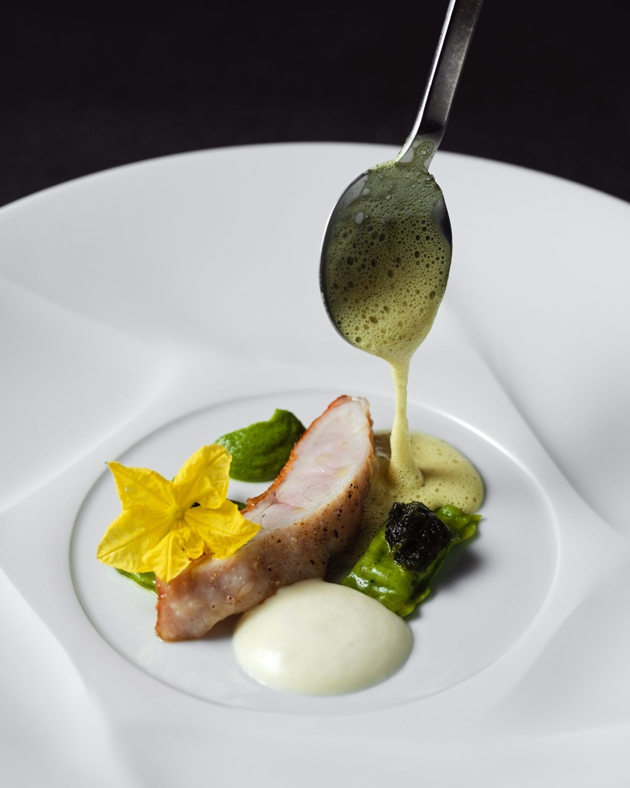
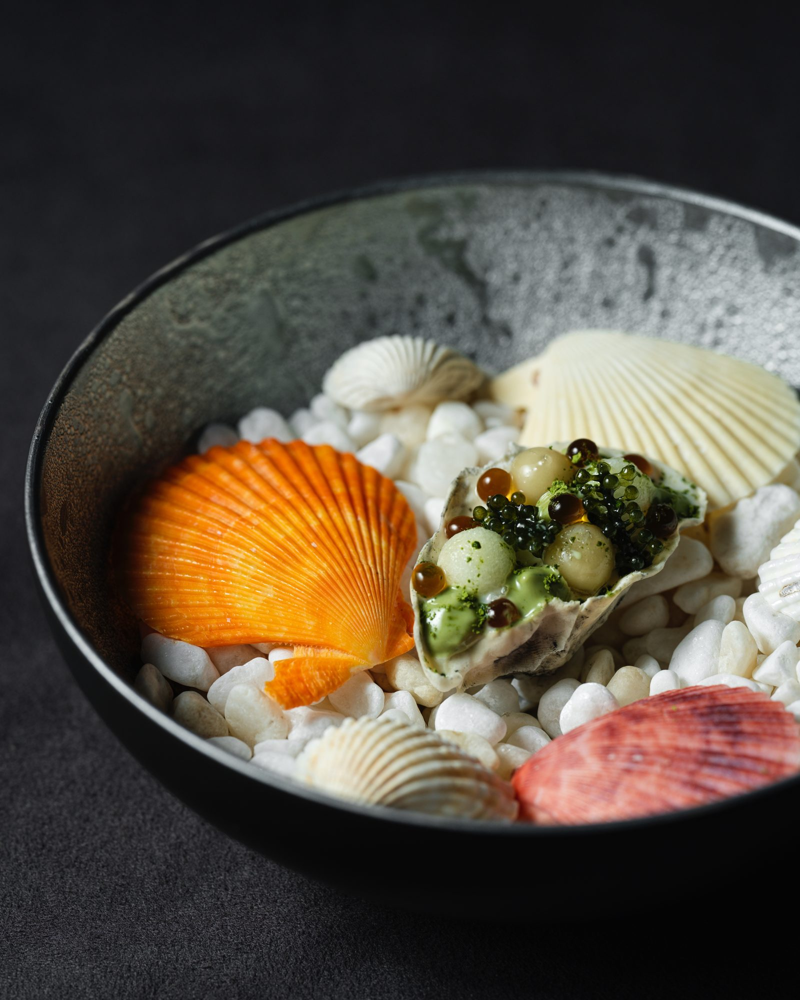
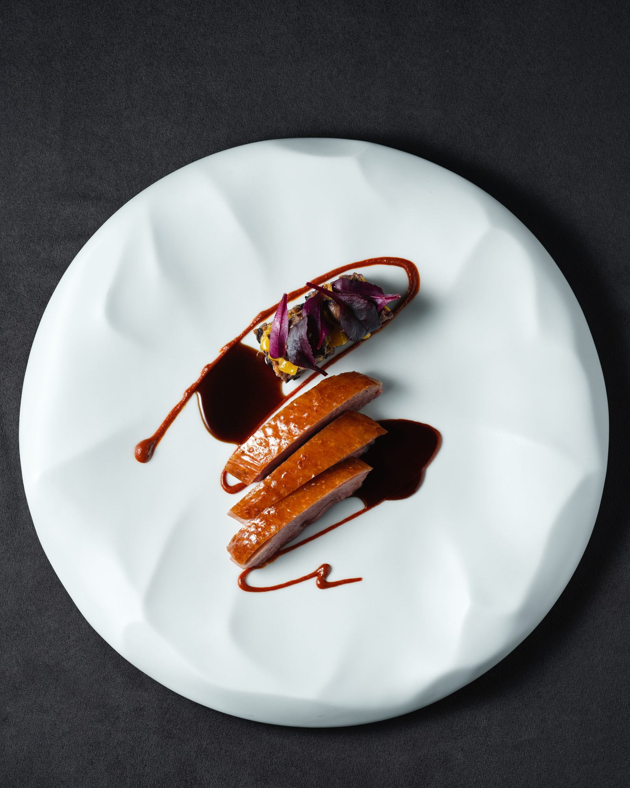
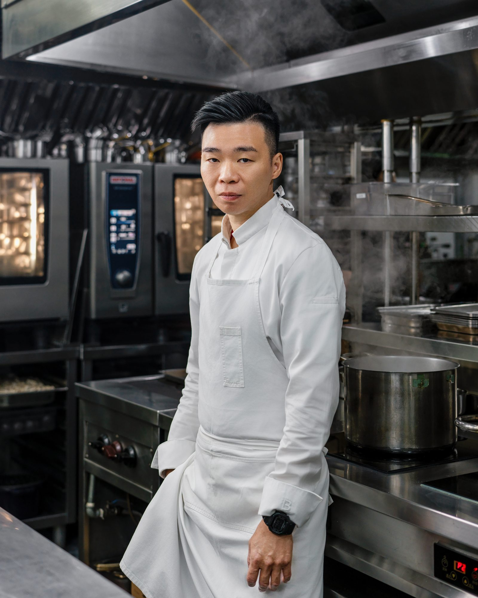

de nuit · Taipei
Scroll
✶ 米其林一星 2021 — 2025・連續五年 · Tatler Taiwan Top 20・最佳服務獎 2025
de nuit・法文裡的「夜晚」
一頓真正的晚餐，值得一個與白日完全分離的世界。


Chapitre I · Cuisine
像一本繪本，這裡的頁面不隨季節更換。
de nuit 以八道與十道菜的套餐，書寫法式傳統與季節的對話——留在這幾頁上的，只有代表作。

Chapitre II · Chef & Team
「乾淨、純粹，但有層次。」
出身香港，以法國菜為根基，2023 年起執掌 de nuit。當令食材、層次細微的醬汁，與一種輕盈的、不喧嘩的優雅。
Reservation
每月 1 日中午 12:00，開放當月及次月訂位。僅接受 inline 線上訂位；每組 1–6 位，僅接待 12 歲以上賓客。